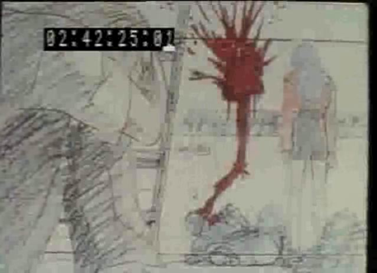
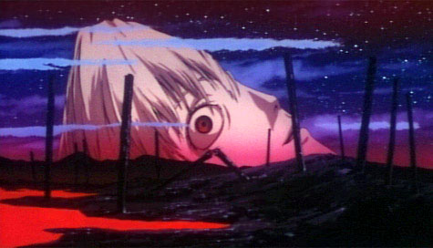

A page to note all the "might have beens" that didn't make it to the screen in the main line of production.
Original Storyline
This from MDWigs...
The Original Plots of Evangelion — From "100% Newtype Collection
- Episode 1: People's reunion: The story begins with a two-car train moving through the montain terrain of Hakone, headed for the city of Tokyo-3. On board is the main character, Shinji Ikari. He has been summoned by his father to come to Tokyo-3. Suddenly the trains stops. Through the mountains and trees can be heard the sound of emergency sirens. Two giant figures appear, before Shinji's eyes and begin a raging battle. Misato Katsuragi appears and saves Shinji. The battle is between the robotic giant "Evangelion" unit-00 and the metalic "Angel" Rajiel. The unit-00 defeates the Angel, but not without heavy damage. The Angel disappears into a lake and the damages unit-00 is taken back to whence it came. Shinji, under the guid of Misato, is taken to underground "artificial evolution" laboratory where he meets Ritsuko and Rei, and, for the first time in years, sees his father. Shinji confronts the Evangelion unit-01. He learns that he has been chosen to pilot it. The Angel, Rajiel, appears once again. The unit-01 is prepared for battle, and Shinji, clueless of what is going on, takes his seat in the piloting chair under the orders of his father and the other grownups. The unit-01, though unable to even walk straight, is sent to fight. In the dark of the night, in the fortess city of Tokyo-3, the two giants clash and the people who created the "Eva" see the true power of their own creation and are awed.
- Episode 2: Unrecognizable ceilings: During battle, the Eva unit-01 goes out of control and shows unpredicted strength. Shinji's will defeated the Angel. After battle, the civilians' reaction to the Evas and Angels is shown. For Shinji, it is the begining of a new life in an unknown land filled with unknown people. The reoccuring fear from the battle. Misato and Shinji's interaction.
- Episode 3: The first telephone call: Shinji's new school. His first friends there. A heavy battle in Tokyo-3.
- Episode 4: 14 years, the first day: Shinji's birthday. But his father holds no words of congradulation for Shinji. Misato's decision for Shinji.
A drama story of the people of "Nerv."- Episode 5: Rei, beyond the heart: Interaction between Rei and Shinji. Thefearsome power shown by an Angel. The Eva's defeat. The laboratory's oncoming peril.
- Episode 6: Deciding battle in Tokyo-3: A battle between human wit and theAngel. The Eva's revenge. Shinji begins to understand the people of Nerv.
- Episode 7: A man-made thing: A new man-made humanoid battle machine besides the Evas. What happens during its test run. A different side of Nerv is shown.
- Episode 8: Asuka's morning arrival: Asuka, Eva unit-02, and Kaji's arrival. Battle ships vs. a giant robot. A battle held on the deck of an aircraft carrier.
- Episode 9: A split second, hearts overlap: The Eva's first beside-water battle. Shinji and Asuka's interaction. A double battle with 2 Evas.
- Episode 10: In the still darkness: An inoperative laboratory. The sadness of modern civilization deprived of electricity. A time suspense story.
- Episode 11: Magma diver: For the first time, Nerv strikes first against an Angel. An Eva is sent into a volcano, specially equipped to capture the Angel. Battle in the magma.
- Episode 12: An 18 second miracle: A highly explosive, unstoppable Angel decends towards Tokyo-3 Absolute peril. Misato's high-risk plan.
- Episode 13: What comes after fear: The great defeat Shinji had expected to come. The breakdown of the Eva unit-01. Shinji gets trapped inside.
- Episode 14: An illness that leads to death, and: A rescue from the damaged unit-01. A drama of people. Shinji learns true fear and hopelessness.
- Episode 15: Shinji, once again: After his recovery, Shinji's decision to ride the Eva unit-01 once again. The Eva unit-01 is given an overhaul remake job.
- Episode 16: In the heart of the enemy: Shinji is taken into and Angel and for the first time, communication is made. Part of the Angels' objective is brought to light.
- Episode 17: Asuka's 1st date: Asuka goes to an amusement park for the first time. Misato's past. A romance comedy.
- Episode 18: the choice of life: Shinji fights the Angel-controlled Eva unit-03 piloted by his friend. The choice Shinji makes.
- Episode 19: A man's battle: Asuka is heavily wounded protecting Shinji. Shinji tries to prove himself to her. The Evas' first aerial battle. Kaji's death.
- Episode 20: Nerv's birth: The Eva unit-05 is sent to Nerv from Germany. A story of what happened 15 years ago: The evaporation of the Dead sea, the creation of Nerv and the Evas. A story of Shinji's father.
- Episode 21: At least, like a human: An underwater battle around a sunken ship. Shinji recieves a mental attack by an Angel. A story of Shinji's mother.
- Episode 22: The cat and the transfer student: The first humanoid Angel (child with a pet cat) Nerv's accidental allowing of the Angel's entry into the laboratory. Shinji's delima of fighting a humanoid Angel. The laboratory's greatest secret is shown.
- Episode 23: The Human Completion Program: The truth behind the Evas and the Human Completion Program. Ritsuko and Shinji's father's plot is revealed.
- Episode 24: The promised time, now: Rei is defeated. Her secret is revealed. The most powerful, 12th Angel awakens, at last, and decends to Earth from the Moon. The Americas, along with the Eva unit-06 is erased from the surface of the Earth. Humanity learns futility against the Angel's absolute power. The promised time, when humanity will return to nothing, approaches. A human drama of hopelessness.
- Episode 25: Aluka, the promised land: The laboratory seeks the ancient ruin, and key to everyting: "Aluka." The UN decides to abandon the Human Completion Program and focus on the destruction of the 12th Angel. Shinji's father opposes the idea. Shinji and the others stay in the laboratory for Rei. A human dram of people's conflict over differing objectives.
- Final Episode: The only way: The ending. The laboratory's destruction and completion to all the secrets and dramas. Finale.
We can see the shadows of the episodes we actually saw; and parts that are beyond what even fanfics reach.
Original EoTV
From the Renewal box-set extras, a pre-production image of the scrapped original TV episode 25, showing that the EoE scenario was not an afterthought:
 Other references to events that only make sense if EoE is already unfolding in the physical world are laced throughout the episode 25 we did eventually see:- 6m12s : EVA-02 in the lake
- 6m21s : Asuka feels useless at the controls
- 10m38s : Ritsuko in the LCL
- 10m43s : Misato KIA
{kind=link}
{kind=link}
{kind=link}
{kind=link}
Live Action Alternate Sequence
There is footage and script out there for a live-action sequence that takes place in some alternate future where Shinji never was, and Asuka, improbably, becomes an office lady, rather than a neurotic scientist like Ritsuko.
Many Endings
I'm not sure if any of this really impacts on my take on the final scene. I don't really have an obvious mechanism for how the foreground details of this scene actually happened that is consistent with what we see in a few moments.
It seems that the ending we got was barely conjured out of quantum maybes. One take had Asuka appear and scornfully kick down the memorial marker (shown fallen, above, and marked as “kicked down” in the final story boards). Another had Shinji holding hands with what turned out to be a disembodied arm.
The latter survives almost as an in-joke, when we see just Asuka's forearm — I wonder if the marker is evidence of a similar palimpsest approach to the ending.
And even the final words were conjured up when Miyamura Yuuko ad libbed instead of saying something to the effect of “No, I won't let you kill me.” as had been scripted.
This source claims that
The show ended by Asuka's line: “Kimochiwarui” [disgusting]. Miyamura Yuko testified that the last line in the original script was “I hate to be killed by a bastard like you”, but she and Anno-san had a discussion about the line and he took what she told him.
though the original Japanese was possibly more accurately rendered by “someone like you” used in derogatory mode.
There is more relevant data here : Asuka's final line in the Evangelion movie was Miyamura's idea.
Miyamura:
I had been thinking directors should convey their ideal how the show shold be to us. But Annno pitchs us questions such as “What do you think for yourself if things went on such and such ways to you?”
After recording all lines of the movie, I was called to the studio because the final line needed to be revised. Ogata came there too as it was Asuka and Shinji's scene.
Asuka's final line was “Anta nankani korosareru nowa mappira yo!” in the film scenario. Annno didn't live with my line no matter how many times I tried. Ogata and I were at a loss how we should play what Annno wanted to express; she even tried to ride on me and choke me to meet his demand. He must have been pursuing reality.
Concerning the final line we adopted, I'm not sure whether I should say about it in fact. At last Anno asked me “Miyamura, just imagine you are sleeping in your bed and a stranger sneaks into your room. He can rape you anytime as you are asleep but he doesn't. Instead, he masturbates looking at you, when you wake up and know what he did to you. What do you think you would say?”
I had been thinking he was a strange man, but at that moment I felt disgusting. So I told him that I thought “Disgusting”. And then he sighed and said “… thought as much.” He said. “I thought as much.”